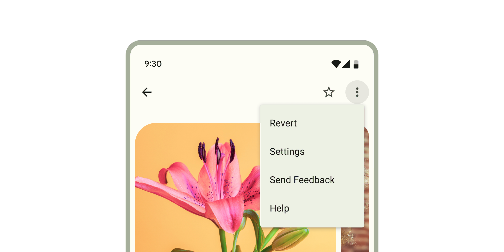

Menus
Menus display a list of choices on a temporary surface.

Interactive Demo
Link to “Interactive Demo”View interactive demo inline.
Open interactive demo in new tab.
Usage
Link to “Usage”When opened, menus position themselves to an anchor. Thus, either anchor or anchorElement must be supplied to md-menu before opening. Additionally, a shared parent of position:relative should be present around the menu and it's anchor, because the default menu is positioned relative to the anchor element.
Menus also render menu items such as md-menu-item and handle keyboard navigation between md-menu-items as well as typeahead functionality. Additionally, md-menu interacts with md-menu-items to help you determine how a menu was closed. Listen for and inspect the close-menu custom event's details to determine what action and items closed the menu.
<!-- Note the position: relative style -->
<span style="position: relative">
<md-filled-button id="usage-anchor">Set with idref</md-filled-button>
<md-menu id="usage-menu" anchor="usage-anchor">
<md-menu-item>
<div slot="headline">Apple</div>
</md-menu-item>
<md-menu-item>
<div slot="headline">Banana</div>
</md-menu-item>
<md-menu-item>
<div slot="headline">Cucumber</div>
</md-menu-item>
</md-menu>
</span>
<script type="module">
// This example uses anchor as an ID reference
const anchorEl = document.body.querySelector('#usage-anchor');
const menuEl = document.body.querySelector('#usage-menu');
anchorEl.addEventListener('click', () => { menuEl.open = !menuEl.open; });
</script>
<span style="position: relative">
<md-filled-button id="usage-anchor-2">Set with element ref</md-filled-button>
<md-menu id="usage-menu-2">
<md-menu-item>
<div slot="headline">Apple</div>
</md-menu-item>
<md-menu-item>
<div slot="headline">Banana</div>
</md-menu-item>
<md-menu-item>
<div slot="headline">Cucumber</div>
</md-menu-item>
</md-menu>
</span>
<script type="module">
// This example uses MdMenu.prototype.anchorElement to set the anchor as an
// HTMLElement reference.
const anchorEl = document.body.querySelector('#usage-anchor-2');
const menuEl = document.body.querySelector('#usage-menu-2');
menuEl.anchorElement = anchorEl;
anchorEl.addEventListener('click', () => { menuEl.open = !menuEl.open; });
</script>Submenus
Link to “Submenus”You can compose <md-menu>s inside of an <md-sub-menu>'s menu slot, but first the has-overflow attribute must be set on the root <md-menu> to disable overflow scrolling and display the nested submenus.
<!-- Note the position: relative style -->
<span style="position: relative">
<md-filled-button id="usage-submenu-anchor">
Menu with Submenus
</md-filled-button>
<!-- Note the has-overflow attribute -->
<md-menu has-overflow id="usage-submenu" anchor="usage-submenu-anchor">
<md-sub-menu>
<md-menu-item slot="item">
<div slot="headline">Fruits with A</div>
<!-- Arrow icons are helpful affordances -->
<md-icon slot="end">arrow_right</md-icon>
</md-menu-item>
<!-- Submenu must be slotted into sub-menu's menu slot -->
<md-menu slot="menu">
<md-menu-item>
<div slot="headline">Apricot</div>
</md-menu-item>
<md-menu-item>
<div slot="headline">Avocado</div>
</md-menu-item>
<!-- Nest as many as you want and control menu anchoring -->
<md-sub-menu
menu-corner="start-end"
anchor-corner="start-start">
<md-menu-item slot="item">
<div slot="headline">Apples</div>
<!-- Arrow icons are helpful affordances -->
<md-icon slot="start">
arrow_left
</md-icon>
</md-menu-item>
<md-menu slot="menu">
<md-menu-item>
<div slot="headline">Fuji</div>
</md-menu-item>
<md-menu-item>
<div slot="headline" style="white-space: nowrap;">Granny Smith</div>
</md-menu-item>
<md-menu-item>
<div slot="headline" style="white-space: nowrap;">Red Delicious</div>
</md-menu-item>
</md-menu>
</md-sub-menu>
</md-menu>
</md-sub-menu>
<md-menu-item>
<div slot="headline">Banana</div>
</md-menu-item>
<md-menu-item>
<div slot="headline">Cucumber</div>
</md-menu-item>
</md-menu>
</span>
<script type="module">
const anchorEl = document.body.querySelector('#usage-submenu-anchor');
const menuEl = document.body.querySelector('#usage-submenu');
anchorEl.addEventListener('click', () => { menuEl.open = !menuEl.open; });
</script>Popover-positioned menus
Link to “Popover-positioned menus”Internally menu uses position: absolute by default. Though there are cases when the anchor and the node cannot share a common ancestor that is position: relative, or sometimes, menu will render below another item due to limitations with position: absolute.
Popover-positioned menus use the native Popover API to render above all other content. This may fix most issues where the default menu positioning (positioning="absolute") is not positioning as expected by rendering into the top layer.
warning Popover API support was added in Chrome 114 and Safari 17. At the time of writing, Firefox does not support the Popover API (see latest browser compatibility).
For browsers that do not support the Popover API,
md-menuwill fall back to using fixed-positioned menus.
<!-- Note the lack of position: relative parent. -->
<div style="margin: 16px;">
<md-filled-button id="usage-popover-anchor">Open popover menu</md-filled-button>
</div>
<!-- popover menus do not require a common ancestor with the anchor. -->
<md-menu positioning="popover" id="usage-popover" anchor="usage-popover-anchor">
<md-menu-item>
<div slot="headline">Apple</div>
</md-menu-item>
<md-menu-item>
<div slot="headline">Banana</div>
</md-menu-item>
<md-menu-item>
<div slot="headline">Cucumber</div>
</md-menu-item>
</md-menu>
<script type="module">
const anchorEl = document.body.querySelector('#usage-popover-anchor');
const menuEl = document.body.querySelector('#usage-popover');
anchorEl.addEventListener('click', () => { menuEl.open = !menuEl.open; });
</script>Fixed-positioned menus
Link to “Fixed-positioned menus”This is the fallback implementation of popover-positioned menus and uses position: fixed rather than the default position: absolute which calculates its position relative to the window rather than the element.
bookmark Fixed menu positions are positioned relative to the window and not the document. This means that the menu will not scroll with the anchor as the page is scrolled.
<!-- Note the lack of position: relative parent. -->
<div style="margin: 16px;">
<md-filled-button id="usage-fixed-anchor">Open fixed menu</md-filled-button>
</div>
<!-- Fixed menus do not require a common ancestor with the anchor. -->
<md-menu positioning="fixed" id="usage-fixed" anchor="usage-fixed-anchor">
<md-menu-item>
<div slot="headline">Apple</div>
</md-menu-item>
<md-menu-item>
<div slot="headline">Banana</div>
</md-menu-item>
<md-menu-item>
<div slot="headline">Cucumber</div>
</md-menu-item>
</md-menu>
<script type="module">
const anchorEl = document.body.querySelector('#usage-fixed-anchor');
const menuEl = document.body.querySelector('#usage-fixed');
anchorEl.addEventListener('click', () => { menuEl.open = !menuEl.open; });
</script>Document-positioned menus
Link to “Document-positioned menus”When set to positioning="document", md-menu will position itself relative to the document as opposed to the element or the window from "absolute" and "fixed" values respectively.
Document level positioning is useful for the following cases:
- There are no ancestor elements that produce a
relativepositioning context.position: relativeposition: absoluteposition: fixedtransform: translate(x, y)- etc.
- The menu is hoisted to the top of the DOM
- The last child of
<body> - Top layer
- The last child of
- The same
md-menuis being reused and the contents and anchors are being dynamically changed
<!-- Note the lack of position: relative parent. -->
<div style="margin: 16px;">
<md-filled-button id="usage-document-anchor">Open document menu</md-filled-button>
</div>
<!-- document menus do not require a common ancestor with the anchor. -->
<md-menu positioning="document" id="usage-document" anchor="usage-document-anchor">
<md-menu-item>
<div slot="headline">Apple</div>
</md-menu-item>
<md-menu-item>
<div slot="headline">Banana</div>
</md-menu-item>
<md-menu-item>
<div slot="headline">Cucumber</div>
</md-menu-item>
</md-menu>
<script type="module">
const anchorEl = document.body.querySelector('#usage-document-anchor');
const menuEl = document.body.querySelector('#usage-document');
anchorEl.addEventListener('click', () => { menuEl.open = !menuEl.open; });
</script>Accessibility
Link to “Accessibility”By default Menu is set up to function as a role="menu" with children as role="menuitem". A common use case for this is the menu button example, where you would need to add keyboard interactions to the button to open the menu (see W3C example).
Menu can also be adapted for other use cases.
The role of the md-list inside the menu can be set with the type attribute. The role of each individual md-menu-item can also be set with the type attribute. Anything else slotted into the menu that is not a list item in most cases should be set to role="none", and md-divider should have role="separator" and tabindex="-1".
<!--
A simplified example of an autocomplete component – missing javascript logic for interaction.
-->
<md-filled-text-field
id="textfield"
type="combobox"
aria-controls="menu"
aria-autocomplete="list"
aria-expanded="true"
aria-activedescendant="1"
value="Ala">
</md-filled-text-field>
<md-menu
id="menu"
anchor="textfield"
role="listbox"
aria-label="states"
open>
<md-menu-item type="option" id="0">
<div slot="headline">Alabama</div>
</md-menu-item>
<md-divider role="separator" tabindex="-1"></md-divider>
<md-menu-item type="option" id="1" selected aria-selected="true">
<div slot="headline">Alabama</div>
</md-menu-item>
</md-menu>Theming
Link to “Theming”Menus support Material theming and can be customized in terms of color. Additionally, md-menu composes md-list, and each menu item extends md-list-item (see theming documentation), so most the tokens for those components can also be used for Menu.
Menu Tokens
Link to “Menu Tokens”| Token | Default value |
|---|---|
--md-menu-container-color | --md-sys-color-surface-container |
--md-menu-container-shape | --md-sys-shape-corner-extra-small |
--md-menu-item-container-color | --md-sys-color-surface-container |
--md-menu-item-selected-container-color | --md-sys-color-secondary-container |
Example
Link to “Example”<style>
:root {
background-color: #f4fbfa;
--md-menu-container-color: #f4fbfa;
--md-menu-container-shape: 0px;
--md-sys-color-on-surface: #161d1d;
--md-sys-typescale-body-large-font: system-ui;
}
md-menu-item {
border-radius: 28px;
}
md-menu-item::part(focus-ring) {
border-radius: 28px;
}
/* Styles for button and not relevant to menu */
md-filled-button {
--md-sys-color-primary: #006a6a;
--md-sys-color-on-primary: #ffffff;
}
</style>
<span style="position: relative">
<md-filled-button id="theming-anchor">Themed menu</md-filled-button>
<md-menu id="theming-menu" anchor="theming-anchor">
<md-menu-item>
<div slot="headline">Apple</div>
</md-menu-item>
<md-menu-item>
<div slot="headline">Banana</div>
</md-menu-item>
<md-menu-item>
<div slot="headline">Cucumber</div>
</md-menu-item>
</md-menu>
</span>
<script type="module">
const anchorEl = document.body.querySelector("#theming-anchor");
const menuEl = document.body.querySelector("#theming-menu");
anchorEl.addEventListener("click", () => {
menuEl.show();
});
</script>MdMenu <md-menu>
Link to “MdMenu <md-menu>” Properties
Link to “Properties”| Property | Attribute | Type | Default | Description |
|---|---|---|---|---|
anchor | anchor | string | '' | The ID of the element in the same root node in which the menu should align to. Overrides setting anchorElement = elementReference.NOTE: anchor or anchorElement must either be an HTMLElement or resolve to an HTMLElement in order for menu to open. |
positioning | positioning | "absolute" | "fixed" | "document" | "popover" | 'absolute' | Whether the positioning algorithm should calculate relative to the parent of the anchor element (absolute), relative to the window (fixed), or relative to the document (document). popover will use the popover API to render the menu in the top-layer. If your browser does not support the popover API, it will fall back to fixed.Examples for position = 'fixed':- If there is no position:relative in the given parent tree and the surface is position:absolute - If the surface is position:fixed - If the surface is in the "top layer" - The anchor and the surface do not share a common position:relative ancestorWhen using positioning=fixed, in most cases, the menu should position itself above most other position:absolute or position:fixed elements when placed inside of them. e.g. using a menu inside of an md-dialog.NOTE: Fixed menus will not scroll with the page and will be fixed to the window instead. Examples for position = 'document':- There is no parent that creates a relative positioning context e.g. position: relative, position: absolute, transform: translate(x, y), etc. - You put the effort into hoisting the menu to the top of the DOM like the end of the <body> to render over everything or in a top-layer. - You are reusing a single md-menu element that dynamically renders content.Examples for position = 'popover':- Your browser supports popover. - Most cases. Once popover is in browsers, this will become the default. |
quick | quick | boolean | false | Skips the opening and closing animations. |
hasOverflow | has-overflow | boolean | false | Displays overflow content like a submenu. Not required in most cases when using positioning="popover".NOTE: This may cause adverse effects if you set md-menu {max-height:...} and have items overflowing items in the "y" direction. |
open | open | boolean | false | Opens the menu and makes it visible. Alternative to the .show() and .close() methods |
xOffset | x-offset | number | 0 | Offsets the menu's inline alignment from the anchor by the given number in pixels. This value is direction aware and will follow the LTR / RTL direction. e.g. LTR: positive -> right, negative -> left RTL: positive -> left, negative -> right |
yOffset | y-offset | number | 0 | Offsets the menu's block alignment from the anchor by the given number in pixels. e.g. positive -> down, negative -> up |
noHorizontalFlip | no-horizontal-flip | boolean | false | Disable the flip behavior that usually happens on the horizontal axis when the surface would render outside the viewport. |
noVerticalFlip | no-vertical-flip | boolean | false | Disable the flip behavior that usually happens on the vertical axis when the surface would render outside the viewport. |
typeaheadDelay | typeahead-delay | number | 200 | The max time between the keystrokes of the typeahead menu behavior before it clears the typeahead buffer. |
anchorCorner | anchor-corner | Corner | Corner.END_START | The corner of the anchor which to align the menu in the standard logical property style of'end-start'.NOTE: This value may not be respected by the menu positioning algorithm if the menu would render outisde the viewport. Use no-horizontal-flip or no-vertical-flip to force the usage of the value |
menuCorner | menu-corner | Corner | Corner.START_START | The corner of the menu which to align the anchor in the standard logical property style of'start-start'.NOTE: This value may not be respected by the menu positioning algorithm if the menu would render outisde the viewport. Use no-horizontal-flip or no-vertical-flip to force the usage of the value |
stayOpenOnOutsideClick | stay-open-on-outside-click | boolean | false | Keeps the user clicks outside the menu. NOTE: clicking outside may still cause focusout to close the menu so see stayOpenOnFocusout. |
stayOpenOnFocusout | stay-open-on-focusout | boolean | false | Keeps the menu open when focus leaves the menu's composed subtree. NOTE: Focusout behavior will stop propagation of the focusout event. Set this property to true to opt-out of menu's focusout handling altogether. |
skipRestoreFocus | skip-restore-focus | boolean | false | After closing, does not restore focus to the last focused element before the menu was opened. |
defaultFocus | default-focus | FocusState | FocusState.FIRST_ITEM | The element that should be focused by default once opened. NOTE: When setting default focus to 'LIST_ROOT', remember to change tabindex to 0 and change md-menu's display to something other than display: contents when necessary. |
noNavigationWrap | no-navigation-wrap | boolean | false | Turns off navigation wrapping. By default, navigating past the end of the menu items will wrap focus back to the beginning and vice versa. Use this for ARIA patterns that do not wrap focus, like combobox. |
isSubmenu | boolean | false | Whether or not the current menu is a submenu and should not handle specific navigation keys. | |
typeaheadController | TypeaheadController | function { ... } | Handles typeahead navigation through the menu. | |
anchorElement | HTMLElement & Partial<SurfacePositionTarget> | undefined | ||
items | MenuItem[] | undefined |
Methods
Link to “Methods”| Method | Parameters | Returns | Description |
|---|---|---|---|
getBoundingClientRect | None | DOMRect | |
getClientRects | None | DOMRectList | |
close | None | void | |
show | None | void | |
activateNextItem | None | MenuItem | Activates the next item in the menu. If at the end of the menu, the first item will be activated. |
activatePreviousItem | None | MenuItem | Activates the previous item in the menu. If at the start of the menu, the last item will be activated. |
reposition | None | void | Repositions the menu if it is open. Useful for the case where document or window-positioned menus have their anchors moved while open. |
Events
Link to “Events”| Event | Type | Bubbles | Composed | Description |
|---|---|---|---|---|
opening | Event | No | No | Fired before the opening animation begins |
opened | Event | No | No | Fired once the menu is open, after any animations |
closing | Event | No | No | Fired before the closing animation begins |
closed | Event | No | No | Fired once the menu is closed, after any animations |
MdMenuItem <md-menu-item>
Link to “MdMenuItem <md-menu-item>” Properties
Link to “Properties”| Property | Attribute | Type | Default | Description |
|---|---|---|---|---|
disabled | disabled | boolean | false | Disables the item and makes it non-selectable and non-interactive. |
type | type | MenuItemType | 'menuitem' | Sets the behavior and role of the menu item, defaults to "menuitem". |
href | href | string | '' | Sets the underlying HTMLAnchorElement's href resource attribute. |
target | target | "" | "_blank" | "_parent" | "_self" | "_top" | '' | Sets the underlying HTMLAnchorElement's target attribute when href is set. |
keepOpen | keep-open | boolean | false | Keeps the menu open if clicked or keyboard selected. |
selected | selected | boolean | false | Sets the item in the selected visual state when a submenu is opened. |
typeaheadText | string | undefined |
Events
Link to “Events”| Event | Type | Bubbles | Composed | Description |
|---|---|---|---|---|
close-menu | CustomEvent<{initiator: SelectOption, reason: Reason, itemPath: SelectOption[]}> | Yes | Yes | Closes the encapsulating menu on closable interaction. |
MdSubMenu <md-sub-menu>
Link to “MdSubMenu <md-sub-menu>” Properties
Link to “Properties”| Property | Attribute | Type | Default | Description |
|---|---|---|---|---|
anchorCorner | anchor-corner | Corner | Corner.START_END | The anchorCorner to set on the submenu. |
menuCorner | menu-corner | Corner | Corner.START_START | The menuCorner to set on the submenu. |
hoverOpenDelay | hover-open-delay | number | 400 | The delay between mouseenter and submenu opening. |
hoverCloseDelay | hover-close-delay | number | 400 | The delay between ponterleave and the submenu closing. |
isSubMenu | md-sub-menu | boolean | true | READONLY: self-identifies as a menu item and sets its identifying attribute |
item | MenuItem | undefined | ||
menu | Menu | undefined |
Methods
Link to “Methods”| Method | Parameters | Returns | Description |
|---|---|---|---|
show | None | Promise<void> | Shows the submenu. |
close | None | Promise<void> | Closes the submenu. |
Events
Link to “Events”| Event | Type | Bubbles | Composed | Description |
|---|---|---|---|---|
deactivate-items | Event | Yes | Yes | Requests the parent menu to deselect other items when a submenu opens. |
request-activation | Event | Yes | Yes | Requests the parent to make the slotted item focusable and focus the item. Used internally for menu keyboard navigation; most applications do not need to listen for this event. It is exposed for authors building their own menu-item replacements, or for advanced cases where you want to call preventDefault/stopPropagation on it to override default focus handling. |
deactivate-typeahead | Event | Yes | Yes | Requests the parent menu to deactivate the typeahead functionality when a submenu opens. |
activate-typeahead | Event | Yes | Yes | Requests the parent menu to activate the typeahead functionality when a submenu closes. |